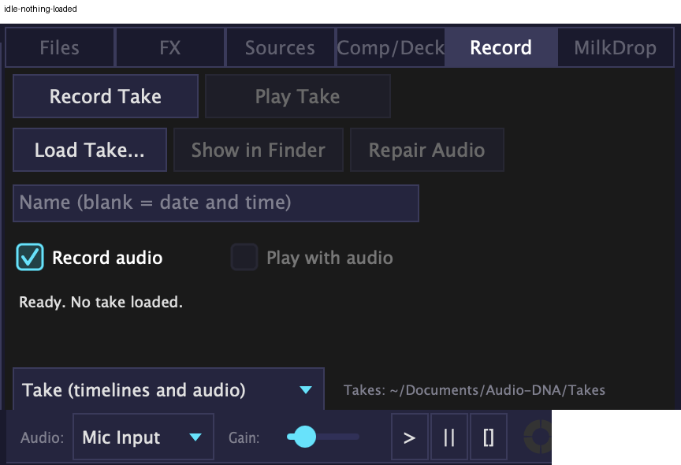
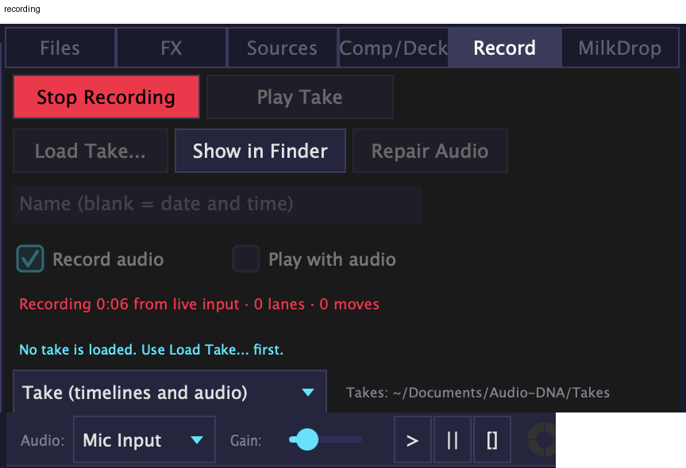
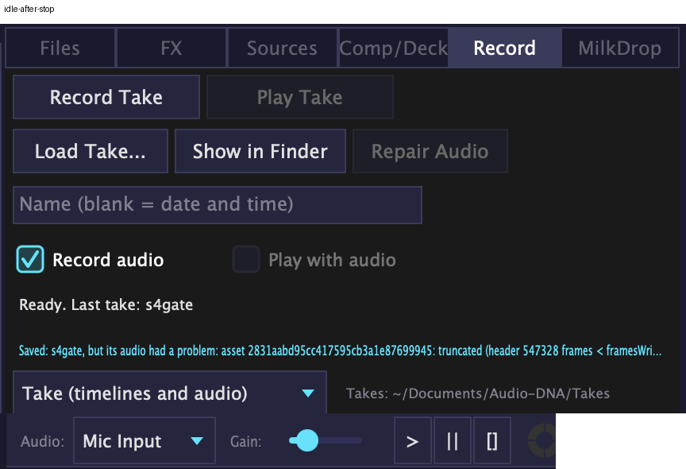
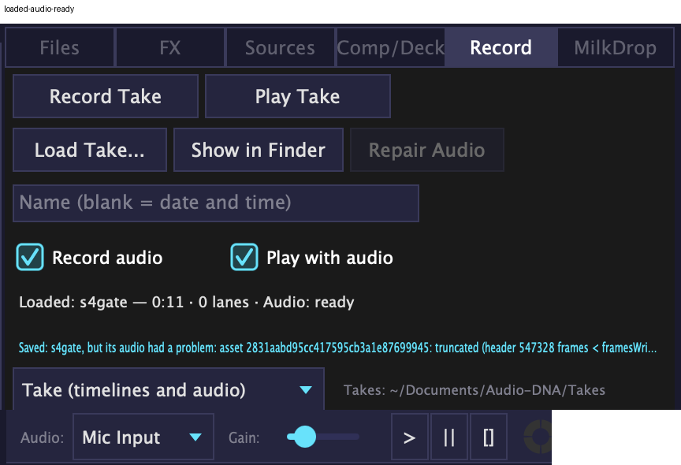
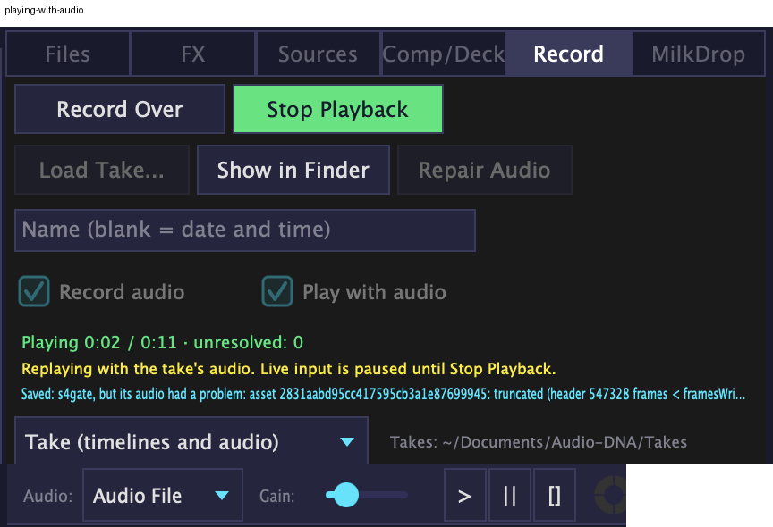
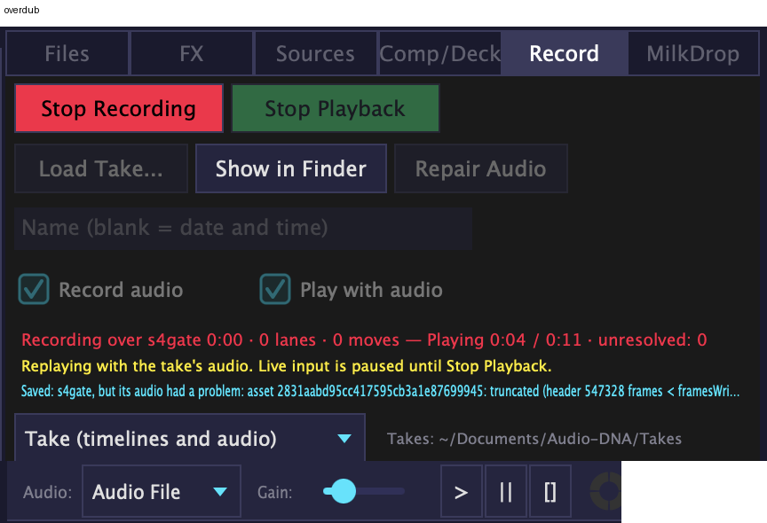
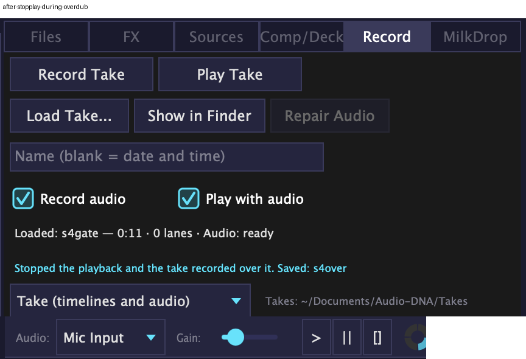
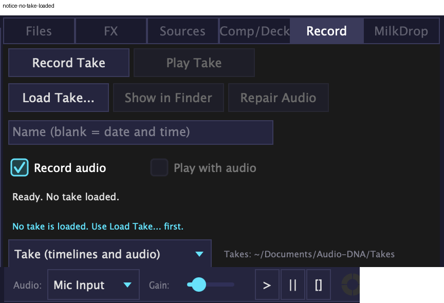

Browser › Record tab. Screenshots of the running app (built-in mic), after the design review and fixes. 25 Sep 2026.
Every state below was driven live and checked by me; five design critics reviewed it and their fixes are in.
Nothing here needs you to act — the list at the bottom is only what a screenshot can't tell me.
The states

1. Nothing loaded — Record Take is the only main action.

2. Recording — red Stop Recording, clock counts from 0:00.

3. After Stop — the take saved itself.

4. Take loaded — its length and whether its audio is ready.

5. Playing with the take's audio — green Stop Playback; live input paused (yellow note).

6. Record Over — redo your moves over the take's audio. Stop Playback is dimmed on purpose.

7. Stopped during Record Over — everything stops, input back to Mic.

8. Refusals are plain sentences.
The "Saved: s4gate, but its audio had a problem…" line in shots 3–7 was a real bug (a sliver of audio lost at Stop, about 1 take in 20). It's fixed and proven since these were taken: 40 record/stop cycles, 0 losses.
What only you can check
Open Browser › Record, record 20–30 seconds over music, Stop, Load it, Play with audio: does the replay feel in time with the music?
Does the panel read clearly from where you stand when performing (size, red/green)?
Press a layer pad to pause/play a clip running in reverse — it should stay reversed.
Your calls — each already has a default, nothing waits on them
Button name: "Record Over" or "Overdub"? [Default: Record Over]
Replay start: should replaying a whole take first snap back to how things looked when you pressed Record? [My recommendation: yes]
End of replay: should a replay stop by itself at the end of the take and give you the live input back? [Default: later step]
Stop Recording during Record Over: keep the replay running, or stop everything? [Default: keep running]
Stop Recording colour: black text on red (passes contrast), or a darker red with light text? [Default: black text]